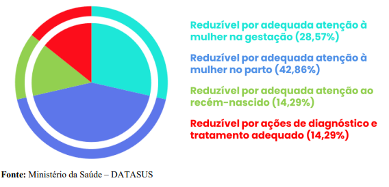
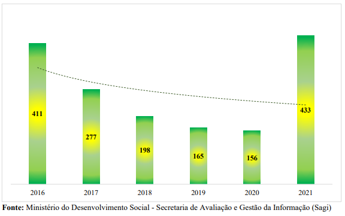
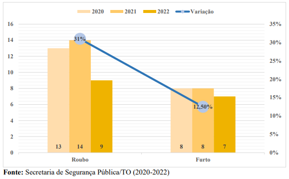
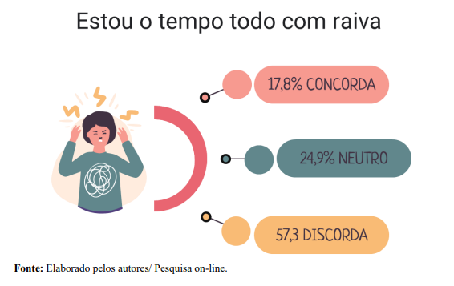

Dados Populacionais
Crescimento Populacional - Paraíso do Tocantins

Estimativa Populacional em 2021
Distribuição da população por sexo, segundo a faixa etária
Distribuição de crianças e jovens de 0 a 19 anos, por faixa etária
Percentual da população total e população de zero a 19 anos por cor ou raça
Saúde
Dados Epidemiológicos (COVID-19) no município de Paraíso do Tocantins
Taxa de Natalidade de Paraíso do Tocantins
Classificação da taxa de mortalidade infantil
Proporção de mortes de crianças menores de 0 a 27 dias segundo a lista de
causas de mortes evitáveis - 2020

Taxa de mortalidade de menores de 5 anos de residentes em Paraíso do
Tocantins (2014-2020)
Taxa de Mortalidade na Adolescência de residentes em Paraíso do Tocantins
no ano de 2020
Expectativa de Vida – Brasil/Tocantins/Paraíso do Tocantins
Taxa de fecundidade segundo territorialidades

Cobertura de vacinas por imunobiológicos sobre menores de um ano de idade
em Paraíso do Tocantins
Assistência
Cobertura da população na coleta de resíduos sólidos
População atendida com Abastecimento de Água no município de Paraíso
do Tocantins
Evolução do Índice de Gini entre 1991 e 2010
Quantidade de Benefício Variável – Criança de 0 a 15 Anos
Índice de Desenvolvimento Humano Municipal em Paraíso do Tocantins
Perfil das famílias do CadÚnico – Renda – Julho de 2022
Perfil das pessoas do CadÚnico – Renda – Julho de 2022

Condicionalidades do Bolsa Família – Educação/Saúde
Total dos benefícios do Programa Auxílio Brasil em Paraíso do Tocantins
Média anual da quantidade de benefícios de superação da extrema pobreza -
BSP

Número de famílias incluídas no Cadastro Único para Programas Sociais e
famílias beneficiarias no Programa Bolsa Família/Auxílio Brasil - 2016-2022
Educação
Distribuição das Matrículas – Paraíso do Tocantins
Fluxo escolar por faixa etária em Paraíso do Tocantins
Proporção de alunos com atraso escolar de 02 anos ou mais (2021)
Proporção de alunos com reprovação ou abandono nas escolas públicas e
privadas em Paraíso do Tocantins (2021)
IDEB (Anos Iniciais) em Paraíso do Tocantins

IDEB (Anos Finais) em Paraíso do Tocantins
IDEB (Ensino Médio) em Paraíso do Tocantins
Direitos
Casos de violação por sexo – série histórica:
Casos de violações por raça – Paraíso do Tocantins
P Casos de violações por tipo de violação ou infração
: Dados da Violência Sexual em Paraíso do Tocantins (2017 – 2021)
Número de gravidezes em mães de até 19 anos em Paraíso do Tocantins

– Número de Adolescentes de Envolvidos em atos infracionais (Roubo e Furto)

Proporção de nascidos vivos com baixo peso ao nascer
Segurança alimentar e nutricional de crianças com menos de 5 anos de idade
Prevalência de obesidade em adolescentes por sexo
Detalhamento do Perfil dos Estudantes da Rede Municipal e Estadual
Constituição familiar
Cor/Raça declarada
Porcentual de jovens que os pais conversam sobre os temas: Sexualidade,
Drogas e Violência
Comportamento de Desânimo Físico

Comportamento de Desânimo Físico – Stress e ansiedade

Violência Autoprovocada
Irritabilidade de crianças e adolescentes de estudantes

Sentimento de culpa em Crianças e Adolescentes
Gravidez na infância e adolescência em Paraíso do Tocantins
Porcentagem de pessoas que conhecem crianças ou adolescente com
problemas com Drogas, Abroto e Violência Sexual
Programas e serviços públicos utilizados
Atuação do Poder Público Municipal no enfrentamento dos problemas

Conhecimento da do SGDCA
Perfil Socioeconômico das Famílias
Violência Doméstica
Alunos portadores de deficiência física e intelectual
Violações de Direitos e Problemas Enfrentados Por Crianças em Creche
Frequência de Consultas ao Médico e ao Dentista
Acidentes Graves sofridos por Adolescentes
Pricipais Problemas de Saúde atendidos pela UBS em Crianças e Adolescentes